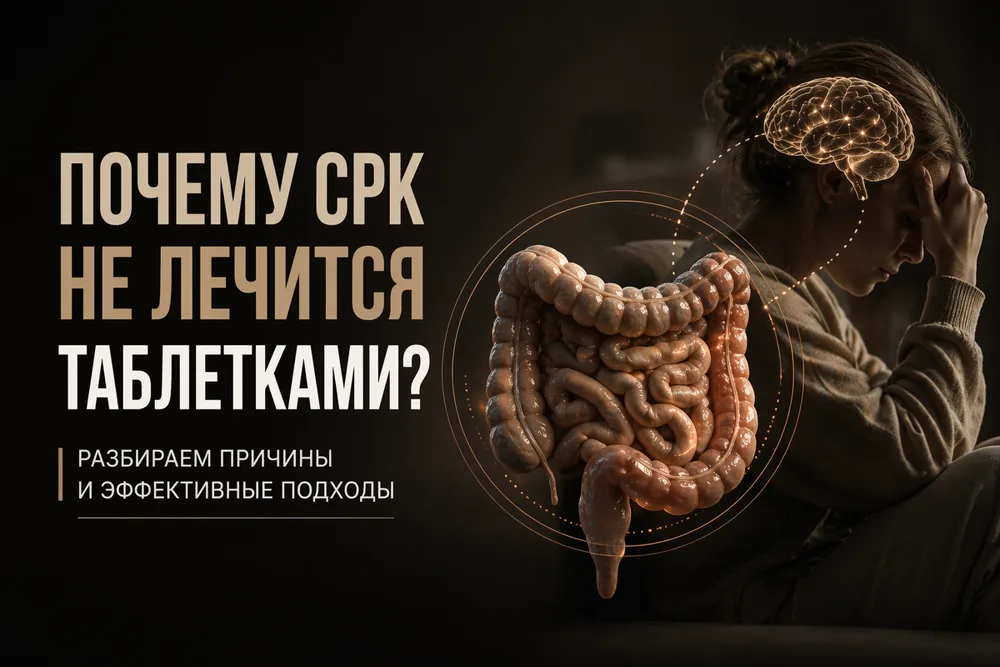

Вздутие, боль, неустойчивый стул: что делать при СРК



Если таблетки от кишечника не дают результата — это не значит, что вы неизлечимы. СРК работает по другим законам.
Синдром раздражённого кишечника — одно из самых частых расстройств: им страдают до 10–15% взрослых. Анализы, эндоскопия и УЗИ часто в норме, но боль, вздутие, запоры или диарея остаются.
Что такое СРК
СРК — это функциональное расстройство: структура кишечника не повреждена, но нарушена его работа. Это диагноз исключения — сначала врач должен исключить органические болезни, а после 50 лет — колоректальный рак.
Почему нет одной таблетки
Причин несколько: нарушение моторики, повышенная чувствительность кишечника, изменение микробиоты, стресс, перенесённая инфекция. Поэтому не существует волшебной таблетки, которая закроет все механизмы сразу.
- Моторика. Кишечник работает слишком медленно, слишком быстро или хаотично, с чередованием состояний.
- Висцеральная чувствительность. Обычное растяжение стенки газом или пищей воспринимается как боль.
- Микробиота. Меняется состав бактерий, газообразование и ферментация углеводов.
- Стресс. Тревога и хроническое напряжение усиливают симптомы и меняют работу кишечника.
- После инфекции. Примерно у 10% пациентов СРК дебютирует после острой кишечной инфекции.
Что реально работает
Диета с низким содержанием FODMAP: 2–6 недель исключения, затем постепенное возвращение продуктов. Эффективность достигает 50–80%, но нужен контроль специалиста.
Из рациона временно убирают пшеницу, лук, чеснок, бобовые, яблоки, молоко, грибы и сахарозаменители. Затем продукты возвращают по одному, чтобы найти личные триггеры.
Пробиотики — только конкретные штаммы с доказанной эффективностью. Нейромодуляторы в малых дозах снижают висцеральную чувствительность. При запорах и тревоге помогают другие группы препаратов и психотерапия.
Быстрых результатов ждать не стоит: диета требует 2–6 недель, нейромодуляторы начинают работать через 2–4 недели, психотерапия длится месяцы. Если диета, пробиотики и спазмолитики не помогли, следующая линия — нейромодуляторы, а при необходимости — психотерапевт.
Главная ошибка — лечить СРК одним препаратом. Нужен комплекс: диета, лекарства и работа с психологическим фоном.
С чего начать
Нет одного анализа на СРК. Диагноз ставится клинически, после исключения других болезней. Начните с проверки первичной диагностики и разговора с врачом — дальше план подбирается индивидуально.
Самый важный шаг — объяснение. Когда пациент понимает, что СРК — реальное заболевание, но его механизмы связаны с чувствительностью и моторикой, а не с «страшным» поражением кишечника, тревога снижается, и симптомы часто уменьшаются.
Ваш врач Гондусов Д.В. 

Статья носит информационный характер и не заменяет консультацию врача. Не занимайтесь самодиагностикой.